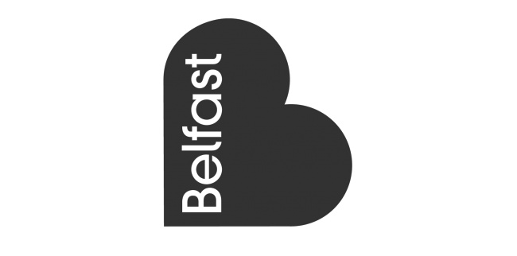

这些logo设计都花了大笔钱。他们值得吗？
很难知道，大多数时间，大公司真正花费在logo上多少费用。很少有公司愿意分享数据，即使这样做，也难以将设计logo的成本与整个品牌的成本区分开来，包括营销，广告和其他相关成本。
但是，虽然我们不能列出“历史上最昂贵的logo”（因为我们不知道），但是看一些企业在其logo上花了大量资金的例子仍然很有趣，他们是否值得呢。
在这篇文章中，和大家一起来看看五个着名的昂贵的logo设计的例子，并提出一些我们可以从中学到的经验教训。
2008年，向日葵样式的BP标志（右）取代了老盾牌logo（左）
2000年，BP为一个新的logo付出了很大的代价。根据“每日电讯报”（The Daily Telegraph）的说法，只是设计logo就花费460万英镑，而重塑品牌的整体成本则达到1.36亿英镑（包括文具，货车和制造工厂的重新制造使用）。
该项目由Landor Associates于2000年率领，以旧的“盾牌”logo替代了专门用于促进“BP作为环境领导者的地位和超越石油部门的目标”的新logo，因为该公司开始投资替代能源。据Landor说：“风格化的向日葵象征着太阳的能量，而绿色的颜色反映了品牌的环境敏感性。”
新标识logo招到环保运动员的嘲笑，其中大多数人认为BP对绿色能源的新兴趣是一种继续推广化石燃料的烟幕。后来，绿色和平组织甚至大量使用了一个模仿版本，其中一只鸟卡在油里的形象。
鉴于加油站持续的价格上涨，当时英国新闻界也对此进行了品牌改造。
然而，Landor网站的案例研究对该项目提出了不同的看法。而不是关注公众对BP改造标志的看法，而是更多地关注对新品牌的内部制度反应。Landor在19个国家培训了1400多名品牌冠军，承诺“超越石油”。因此，“发布九个月后，百分之九十七的BP员工也意识到这个品牌理念，十分之一的人认为BP正在朝着正确的方向前进。”
简而言之，案例研究的基调表明，BP不太有兴趣说服公众变得更加环保，更有兴趣说服自己的员工。而对于您如何看待新标志设计的成功，这就完全不同了。
经验教训：在判断logo之前，先考虑一下真正的观众是谁。例如，它可能更倾向于影响员工，利益相关者或投资者而不是消费者。
1998年的花旗银行logo是花旗集团和旅行者集团合并后组建花旗银行创建的
花旗银行标志logo是1998年由Pentagram的知名设计师Paula Scher设计的，当时行业巨头Citicorp和Travelers Group合并成为世界上最大的金融服务公司。该银行为此设计支付了150万美元的王牌金额（对于品牌整体而言，近一千万美元的一部分）并不奇怪。管理资产7000亿美元，其口袋深刻。
但有争议的是，他们收到的标志logo是Scher画在餐巾背面的一个草图。第一次提案的会议时间也只有短短的 10分钟。
Scher的快速素描形成了花旗银行150万美元标志的基础
她在这次视频采访中解释说：“我最好的作品是一种巨大而大胆的笔画。” “这是有问题的，因为很多客户喜欢”购买流程“，他们不认为他们的钱是值得的，像我卖的太快了。 “你怎么可能跟别人说话，一秒钟就完成了？”但是这是在二十四年后完成的。“
换句话说，借鉴这34年的经验，Scher可以简化几个月的“过程”，并立即为logo设计提供完美的基础。
当然，花旗银行以有意义的方式获得了他们的钱。到目前为止，全世界可辨认的标志已经到了整个世纪，并没有显示出需要被替代的迹象。
经验教训：logo设计的经济价值不在于需要多长时间设计，而且它的工作效果如何。Scher的例子突出说明了经验丰富和有才华的设计师能够帮助捷径过程，并且仍然获得了很好的成果，因此也没有什么羞愧可言。

贝尔法斯特市的城市logo设计花费18万英镑
2008年，贝尔法斯特市委托了一个新的标志logo，但这个过程比原来预期的更长，更多的参与。根据贝尔法斯特电报报道，据报15个月和18万英镑，创建了由品牌咨询公司劳埃德·东霍夫（Lloyd Northover）设计的新标志，以及25万英镑广告，发布活动和展示促销活动。
这个数字吸引了广泛的新闻批评，特别是当星期日生活报透露，新的logo与英国已经使用的其他logo非常相似，例如食品和饮料德文郡的logo，这个标志只有7000英镑。
不过值得指出的是，劳埃德·东霍夫肯定是为了赚钱而付出的。在竞争激烈的演讲过程中赢得了合同后，它继续在商业，旅游，酒店，文化，艺术和青年社区内约3000名关键的贝尔法斯特市利益相关者进行咨询。其内部市场研究团队还与焦点小组合作，举办了研讨会，并进行了网络调查，以测试英格兰，苏格兰，爱尔兰共和国，欧洲和美国的想法和概念。
鉴于贝尔法斯特的困难历史，公平地说，这样的磋商是必要的，以避免代价高昂的错误。因此，所得到的徽标logo在所有社区都受到欢迎。
经验教训：在充满冲突的环境中，让每个人都很好。如果在研究您的品牌时花费一点额外费用，这是值得付出的代价：替代品在长期来看会变得更加昂贵。
1976年NBC标志logo（左）和相当相似的NETV标志（右）
1976年，NBC希望更新其成立50周年的形象，并引入了一个全新的logo设计，基于由两个梯形组成的抽象字母N：一个红色，一个蓝色。它继续用于美国电视网络的第一个电子动画识别码，并于1976年1月1日正式使用。由Lippincott和Margulies公司设计，据报是在75万美元到100万美元之间的费用; 这在20世纪70年代是巨额的财富。
不幸的是，没有人注意到它与内布拉斯加教育电视（PBS网络的一部分）的标志几乎相同。
在二月份，后者填补了商标侵权诉讼，而在最终的庭外解决方案中，NBC向内布拉斯加州ETV提供超过80万美元的新设备，并支付了55,000美元，以支付设计和实施新徽标logo的费用。（由于NETV在设计原始logo时花费不到100美元，这似乎特别高）。
经验教训：不要剽窃别人的商标，甚至是无辜的，否则你会付出昂贵的代价。尤其是他们和你在同一行业。
Tropicana 饮料这个新logo，估计造成了3000万美元的销售损失
正如NBC的例子所示，logo的“成本”并不总是您为设计公司的设计付款而造成的。在百事可乐水果饮料品牌Tropicana，由于更换了logo和包装，在短短两个月内，由于损失了3000万美元的销售损失。
公平地说，2009年rebrand品牌的失败并不完全取决于公司的logo。新的包装已经将一个着名的水果与稻草标志交换成了一般的一杯橙汁，很难在货架上找到。这个耗资3500万美元的广告宣传活动，对家庭生活的过分热情和荒谬的口号(“挤压，这是自然的”)是另一个因素。
但是，新的，拉直的垂直logo真的没有帮助。虽然旧logo（下图）具有乐趣和个性，但现在已经不复存在的设计机构Arnell的这个新创作放弃了所有这一切。可以肯定的是这个标识logo看起来更成熟和专业，但是那些与含糖饮料相关的价值在哪里呢？形成字母点的叶子仍然在那里，但如此之小，以至于模糊不清。总而言之，除了本身之外，整个品牌的可识别因素已经下降到接近零。
结果，人们不太可能在超市找到自己喜欢的饮料，而且不太愿意买。两个月后，Tropicana明智地恢复了旧的logo和包装。
旧logo在新品牌故障后迅速恢复
经验教训：干净，简约的外观可能适合科技产品和网络初创公司，但对于具有高度客户忠诚度的食品和饮料品牌来说，这是一场灾难。

济南海右博纳品牌营销咨询有限公司
Copyright 2001-2019 All Rights Reserved Sivibrand.
王伟品牌顾问微信